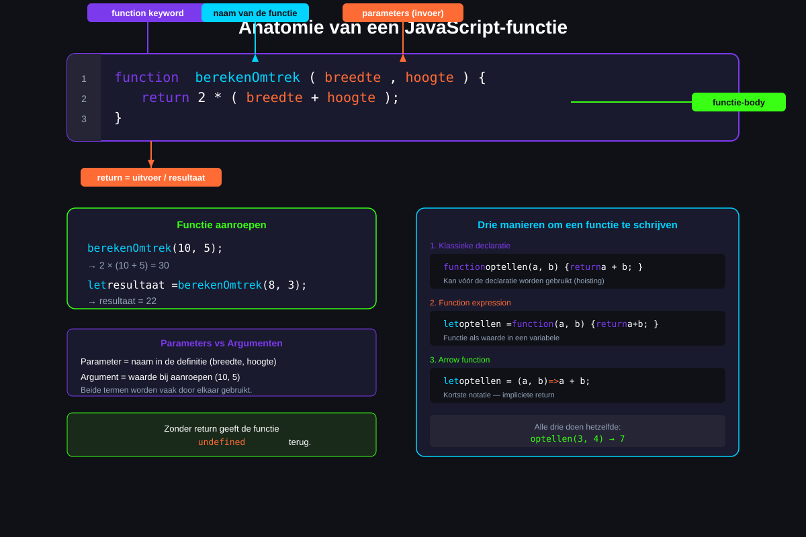
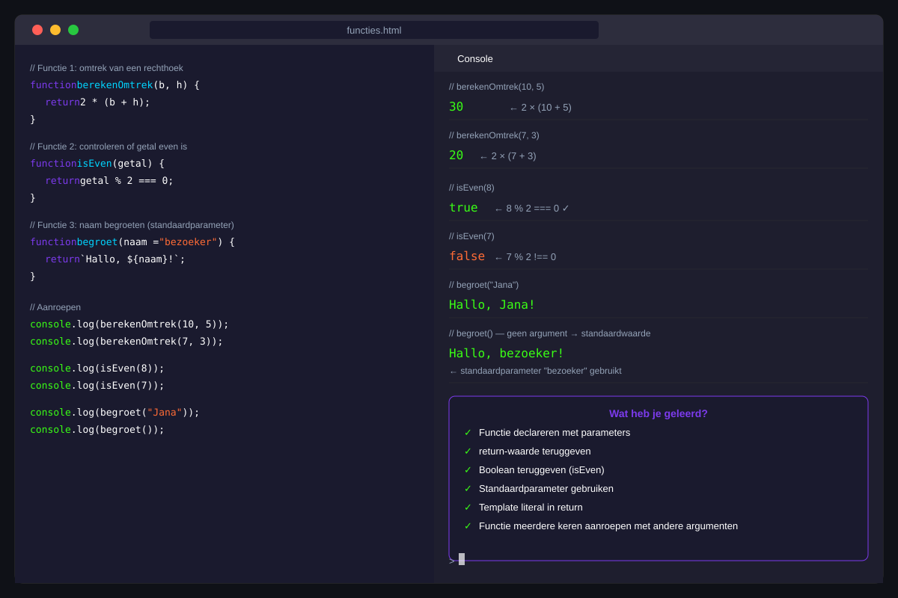

Functies
- Uitleggen waarom functies nuttig zijn (herbruikbaarheid, leesbaarheid)
- Een klassieke functie schrijven met parameters en een return-waarde
- Een functie aanroepen en het resultaat gebruiken
- Standaardparameters instellen met
= - Het verschil begrijpen tussen een function declaration en een function expression
- Een arrow function schrijven in de compacte notatie
- Uitleggen wat hoisting is bij functies
- Begrijpen waarom variabelen binnen een functie lokaal zijn (scope)
25.1 Waarom functies?
Stel je voor dat je op drie verschillende plaatsen in je programma de omtrek van een rechthoek wil berekenen. Zonder functies schrijf je dezelfde formule drie keer:
let omtrek1 = 2 * (10 + 5);
console.log(omtrek1);
let omtrek2 = 2 * (8 + 3);
console.log(omtrek2);
let omtrek3 = 2 * (15 + 7);
console.log(omtrek3);Als de formule verandert, moet je hem op drie plaatsen aanpassen — en je riskeert er één te vergeten. Met een functie schrijf je de logica één keer:
function berekenOmtrek(breedte, hoogte) {
return 2 * (breedte + hoogte);
}
console.log(berekenOmtrek(10, 5)); // → 30
console.log(berekenOmtrek(8, 3)); // → 22
console.log(berekenOmtrek(15, 7)); // → 44Voordelen van functies:
- Herbruikbaarheid: schrijf één keer, gebruik overal
- Leesbaarheid: een goede functienaam maakt de code begrijpelijk
- Onderhoudbaarheid: aanpassen op één plaats volstaat
- Testeerbaarheid: je kan een functie apart testen
25.2 Klassieke functiedeclaratie
Structuur
function naam(parameter1, parameter2) {
// functiebody
return resultaat;
}function— sleutelwoord dat de definitie startnaam— de naam van de functie (gebruik een werkwoord:bereken,controleer,toon)- parameters — variabelen die de functie bij aanroep ontvangt (optioneel)
return— geeft een waarde terug aan de aanroepende code (optioneel)

Voorbeeld met parameters en return
function telOp(a, b) {
let som = a + b;
return som;
}
let resultaat = telOp(3, 7);
console.log(resultaat); // → 10Parameters vs argumenten
- Parameters zijn de namen in de definitie:
function telOp(a, b)→aenbzijn parameters - Argumenten zijn de concrete waarden bij aanroep:
telOp(3, 7)→3en7zijn argumenten
Beide termen worden vaak door elkaar gebruikt. Dat mag.
25.3 Functies zonder return-waarde
Niet elke functie hoeft iets terug te geven. Een functie die alleen iets doet (bv. iets toont) heeft geen return nodig.
function toonBoodschap(naam) {
console.log(`Hallo, ${naam}! Welkom bij de les.`);
}
toonBoodschap("Senne"); // → "Hallo, Senne! Welkom bij de les."
toonBoodschap("Lies"); // → "Hallo, Lies! Welkom bij de les."Als je geen return schrijft, geeft de functie automatisch undefined terug.
25.4 Standaardparameters
Met een standaardparameter geef je een waarde mee die gebruikt wordt als het argument ontbreekt bij de aanroep.
function groet(naam = "bezoeker") {
console.log(`Hallo, ${naam}!`);
}
groet("Marie"); // → "Hallo, Marie!"
groet(); // → "Hallo, bezoeker!" (standaard gebruikt)Parameters met een standaardwaarde zet je achteraan:
function berekenPrijs(prijs, korting = 0, btw = 21) {
let naPrijs = prijs * (1 - korting / 100);
let metBtw = naPrijs * (1 + btw / 100);
return Math.round(metBtw * 100) / 100;
}
console.log(berekenPrijs(100)); // → 121
console.log(berekenPrijs(100, 10)); // → 108.9
console.log(berekenPrijs(100, 10, 6)); // → 9025.5 Function expression — functie in een variabele
Je kan een functie ook opslaan in een variabele:
let kwadrateer = function(getal) {
return getal * getal;
};
console.log(kwadrateer(4)); // → 16
console.log(kwadrateer(7)); // → 49Dit heet een function expression. De functie heeft geen naam na het function-sleutelwoord — dit is een anonieme functie.
Een function expression kan je niet vóór de declaratie aanroepen — hoisting werkt hier niet (zie volgende sectie).
25.6 Arrow functions — compacte notatie
Arrow functions (pijlfuncties) zijn een kortere schrijfwijze, geïntroduceerd in ES6 (2015).
// Klassieke function expression:
let kwadrateer = function(getal) {
return getal * getal;
};
// Arrow function — zelfde functie:
let kwadrateer = (getal) => {
return getal * getal;
};
// Nog korter: één parameter → haakjes mogen weg
let kwadrateer = getal => {
return getal * getal;
};
// Kortst: één uitdrukking → impliciete return
let kwadrateer = getal => getal * getal;Voorbeelden
// Meerdere parameters → haakjes verplicht
let telOp = (a, b) => a + b;
console.log(telOp(3, 4)); // → 7
// Geen parameters → lege haakjes verplicht
let geefHallo = () => "Hallo!";
console.log(geefHallo()); // → "Hallo!"
// Meerdere regels → accolades en return verplicht
let berekenBmi = (gewicht, lengte) => {
let bmi = gewicht / (lengte * lengte);
return Math.round(bmi * 10) / 10;
};
console.log(berekenBmi(70, 1.75)); // → 22.925.7 Hoisting — voor de declaratie aanroepen
Hoisting is een JavaScript-gedrag waarbij functiedeclaraties naar boven worden verplaatst vóór de code wordt uitgevoerd.
Klassieke functiedeclaraties: hoisting werkt
// Aanroep VÓÓR de definitie — dit werkt!
console.log(telOp(3, 4)); // → 7
function telOp(a, b) {
return a + b;
}Function expressions en arrow functions: geen hoisting
// Aanroep VÓÓR de definitie — dit geeft een fout!
console.log(kwadrateer(4)); // TypeError: kwadrateer is not a function
let kwadrateer = getal => getal * getal;Definieer je functies altijd vóór je ze aanroept, tenzij je bewust gebruik maakt van hoisting met klassieke declaraties.
25.8 Scope — lokale variabelen
Variabelen die je binnen een functie aanmaakt, bestaan alleen binnen die functie. Buiten de functie zijn ze niet toegankelijk. Dit noem je lokale scope.
function berekenBtw(prijs) {
let btw = prijs * 0.21; // btw is een lokale variabele
return btw;
}
console.log(berekenBtw(100)); // → 21
console.log(btw); // ReferenceError: btw is not definedParameters zijn ook lokaal:
function verdubbel(getal) {
getal = getal * 2; // getal is een lokale kopie
return getal;
}
let mijnGetal = 5;
console.log(verdubbel(mijnGetal)); // → 10
console.log(mijnGetal); // → 5 (ongewijzigd)De functie werkt met een kopie van de waarde. De originele variabele wordt niet gewijzigd.
Oefeningen
Schrijf de volgende drie functies en roep elke minstens twee keer aan met verschillende argumenten.
Functie 1 — Omtrek van een rechthoek
Schrijf een functie berekenOmtrek die de breedte en hoogte als parameters ontvangt en de omtrek teruggeeft.
Formule: omtrek = 2 × (breedte + hoogte)
// Verwachte uitvoer:
// berekenOmtrek(10, 5) → 30
// berekenOmtrek(4, 4) → 16Functie 2 — Controleer of een getal even is
Schrijf een functie isEven die een getal als parameter ontvangt en true teruggeeft als het even is, false als het oneven is.
// Verwachte uitvoer:
// isEven(4) → true
// isEven(7) → false
// isEven(0) → trueFunctie 3 — Naam begroeten met standaardparameter
Schrijf een functie begroet die een naam en een tijdstip als parameters heeft. Het tijdstip heeft een standaardwaarde "dag".
// Verwachte uitvoer:
// begroet("Jana") → "Goeiedag, Jana!"
// begroet("Senne", "ochtend") → "Goedemorgen, Senne!"
Huistaak
Opdracht: Rekenmachine met functies
Deel 1 — Basisfuncties (4 punten)
- Schrijf vier functies:
telOp(a, b),treckAf(a, b),vermenigvuldig(a, b),deel(a, b) - Elke functie ontvangt twee parameters en geeft het resultaat terug
- Bij
deel: controleer ofbniet 0 is — return dan een foutmelding als string - Test elke functie met minstens twee aanroepen en toon het resultaat via
console.log()
Deel 2 — Arrow functions (3 punten)
- Herschrijf de vier functies als arrow functions
- Gebruik de kortste notatie waar mogelijk (impliciete return)
Deel 3 — Samengestelde berekening (3 punten)
- Schrijf een functie
berekenBmi(gewicht, lengte)die de BMI berekent - Formule:
BMI = gewicht / (lengte × lengte) - Rond af op 1 decimaal met
Math.round() - Test met realistische waarden
Vragenlijst
Controleer of je de leerstof van dit hoofdstuk begrijpt.
Wat is het sleutelwoord om een klassieke functie te declareren?
Wat geeft een functie terug als er geen return statement in staat?
Wat zijn parameters in een functie?
Welke schrijfwijze is een correcte arrow function met impliciete return?
Wat is hoisting bij klassieke functiedeclaraties?
Wat gebeurt er als je een variabele aanmaakt binnen een functie en die probeert te gebruiken buiten de functie?